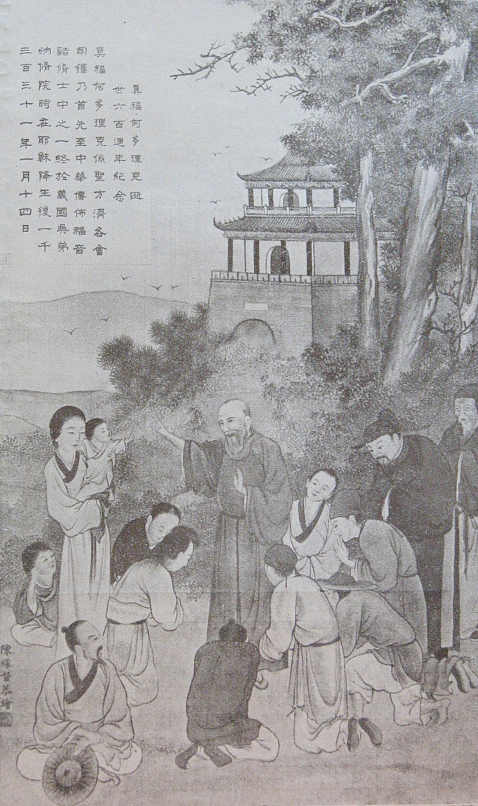

Friar Odoric was born to an Italian family in or about 1286 ad. In the village of Villanova, Odorics family was in charge of protecting the Italian town of Pordenone. Hence the name “Friar Odoric of Perdenone”. The Catholic Encyclopedia even states that his family may have had Czech Ancestry. He also had vows to the Franciscan order and at one point joined their Udine convent. In 1296 Friar Odoric traveled into the Balkans as well as into Mongol occupied southern Russia. Later in April 1318, Friar Odoric

Most of my sources for the "bibliography" section are located in the other weblinks section. I will include the citations for the books I am using to write the article above. And to write/create my map. So far my Pitt cat documents have been very helpful but there are some inconsistancies in these documents that have been difficult to crack.
Contemporaries of Marco Polo -Komroff (primary due to them containing actual journal entries and no side comentary. These may actually be secondary due to them being translations.) The Travels of Sir John Mandevale
For Primary sources I am mainly only going to use one. That is Friar Odorics peronal journal. But this journal seems to be sligtly unreliable. Many of his locations of note seem to be wrong and out of place. This will need to be further consulted and researched by me to make the appropriate call.
This is the section that is going to be more bare bones. I'd like to find more sources of this type as it will help clear the air quite a bit. I do feel like they will not be as needed but they will still be important enough.
Thank you for viewing my page! For further reading and exploring please consult the links below.